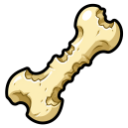
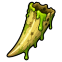
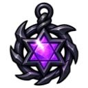
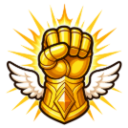

Prayer
Prayer is trained by offering bones and other remains for blessings. Each blessing costs the items below, gives Prayer XP and boosts a skill for a while.
Ward
| Blessing | Level | XP | Costs | Effect |
|---|---|---|---|---|
| Minor Ward | 1 | 20 | +2 🛡️ Defence for 5 min | |
| Lesser Ward | 15 | 45 |  Chewed Bone ×3 | +4 🛡️ Defence for 5 min |
| Greater Ward | 35 | 80 |  Rotted Fang ×2 | +6 🛡️ Defence for 5 min |
| Sacred Ward | 60 | 140 |  Warped Sigil | +9 🛡️ Defence for 5 min |
Focus
| Blessing | Level | XP | Costs | Effect |
|---|---|---|---|---|
| Minor Focus | 1 | 20 | +2 ⚔️ Attack for 5 min | |
| Lesser Focus | 15 | 45 | Chewed Bone ×3 | +4 ⚔️ Attack for 5 min |
| Greater Focus | 35 | 80 | Rotted Fang ×2 | +6 ⚔️ Attack for 5 min |
| Sacred Focus | 60 | 140 | Warped Sigil | +9 ⚔️ Attack for 5 min |
Vigor
| Blessing | Level | XP | Costs | Effect |
|---|---|---|---|---|
| Minor Vigor | 1 | 20 | +2 💪 Strength for 5 min | |
| Lesser Vigor | 15 | 45 | Chewed Bone ×3 | +4 💪 Strength for 5 min |
| Greater Vigor | 35 | 80 | Rotted Fang ×2 | +6 💪 Strength for 5 min |
 Sacred Vigor | 60 | 140 | Warped Sigil | +9 💪 Strength for 5 min |